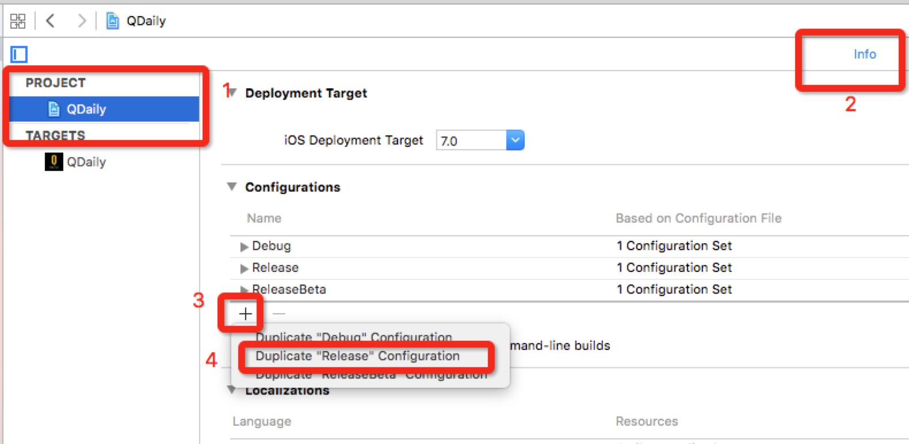
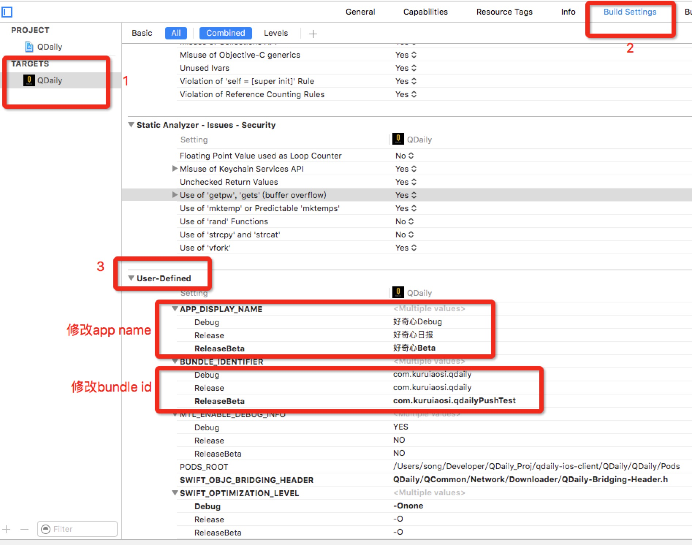
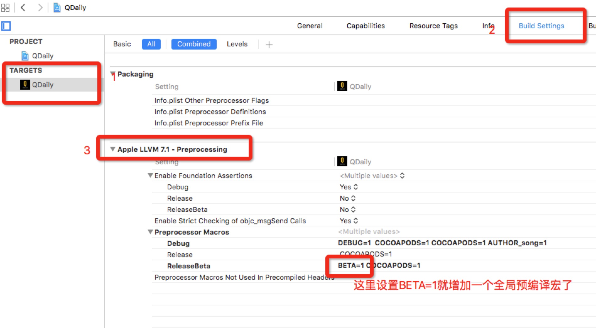
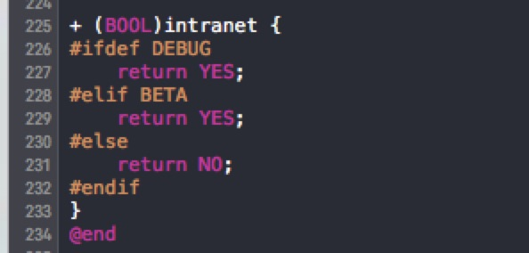
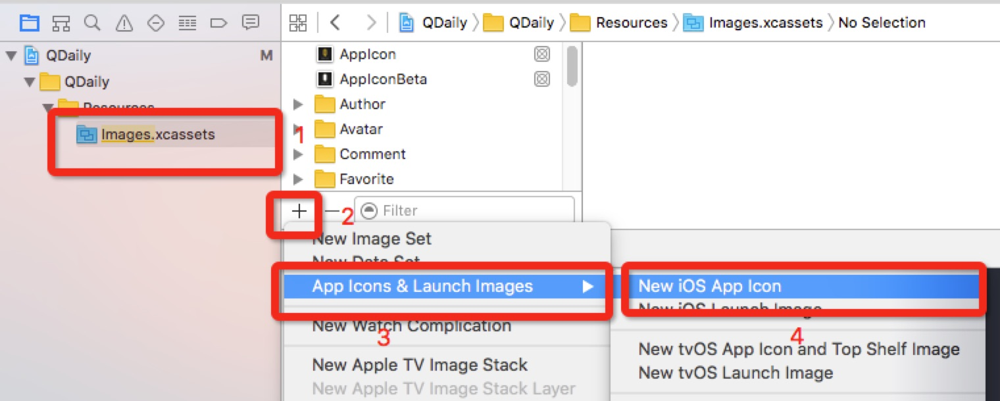
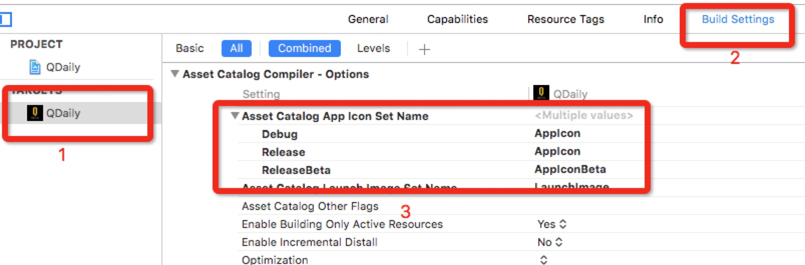
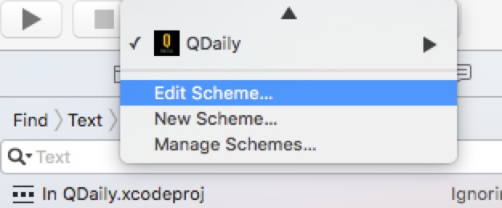
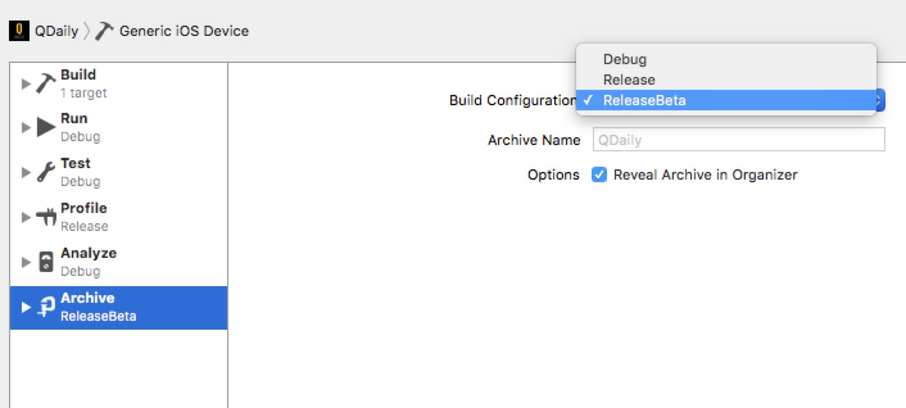
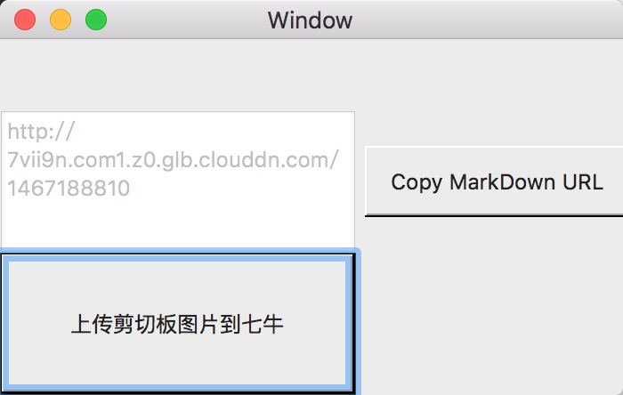
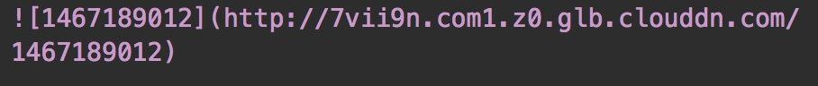

前两天看文章使用 Xcode 的 Target 区分开发和生产环境，感觉这个虽然是一种区分开发和生产环境比较强大的方法，但也有比较轻量级的，下面就分享下QDaily采用的配置Build Configuration方案。
区分测试环境和生产环境的上面的链接已经说了：区分统计数据、区分crash log、区分server地址、区分本地数据库...
每个工程默认会有两个Build Configure，即debug和release，我们就在这里做文章，增加一个releaseBeta版本，用来打包内部测试环境版本。
QDaily在这里主要区分了app name，app icon，app bundleId（测试推送），并增加了一个全局的预处理宏BETA，代码中通过BETA标志进行和DEBUG相似的处理
创建并配置新的Build Configuration
1、新建
我们主要是测试版需要区分，DEBUG版本并不需要，所以duplicate了release的默认配置。新建完记得改名，下面我已经新建过了，就没有改名那一步了。

2、区分app name、bundle Id
所有步骤看图，非常方便，非常简单。

3、设置一个预处理宏和编译器标志BETA
具体看下图步骤，增加一个BETA：

我们app中现在还没有使用swift，所以也就没有做swift的设置，如果需要可以去参考顶部的引用链接进行设置。
这样代码里就能直接进行调用了。eg：

4、修改releaseBeta的app icon
这里要分两步，先在images.xcassets中新建一个针对beta版本的app icon：

我们这里已经建立过了，下一步就不示范了。这里我们把新icon命名为AppIconBeta。
第二步和上面相似，在对应位置上填上我们对新icon的命名就好了：

5、其它区分
所有build settings中的选项都可以用Build Configuration来进行区分设置，这里就不一一进行示范了。QDaily只有上面这些做了处理，其它都是通过BETA宏在代码里的操作。
使用 Build Configuration
大多时候，我们都只是在编写release包时候需要对线上和开发环境进行区分，我们只需要修改archive中的scheme就好了：
先选择app target的Edit Scheme。

然后在Archive中选择我们新建的那个就好了。

关于管理多个 Build Configuration 的一些注意事项
和新建target相比，亲测没有任何注意事项...你只要注意不要把releaseBeta传到appstore就行了。
文章最后的推荐
安利一个我写的Mac下轻松上传到七牛传图的app，本文加了这么多图片，表示毫无压力，非常简单。
截屏后点击“上传剪切板图片到七牛”这个按钮（也可以拖拽图片文件上传）。

完成后这个外链url会默认在你的剪切板。当然也可以完成后点击“Copy MarkDown URL”，这样会直接copy一个下面这样的字符串在剪切板，你可以在你的md文件中直接使用：

真是markdown博客书写者的福音啊。那么这么NB的app哪里有呢？稍后整理完成我会放出链接来~